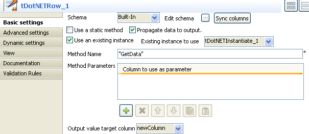
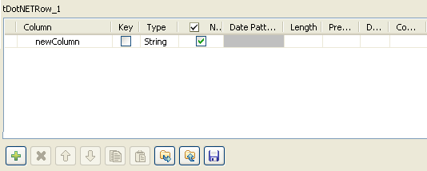

|
Component family |
DotNET | |
|
Function |
tDotNETRow sends data to and from libraries and classes within .NET or other custom DLL files. | |
|
Purpose |
tDotNETRow helps you facilitate data transform by utilizing custom or built-in .NET classes. | |
|
Basic settings |
Schema and Edit schema |
A schema is a row description, i.e., it defines the number of fields to be processed and passed on to the next component. The schema is either built-in or remotely stored in the Repository. If you are using Talend Open Studio for Big Data, only the Built-in mode is available. |
|
|
|
Built-in: No property data stored centrally. |
|
|
|
Repository: Select the Repository file where properties are stored. The following fields are pre-filled in using fetched data |
| Use a static method |
Select this check box to invoke a static method in .NET and this will disable Use an existing intance check box. | |
| Propagate a data to output |
Select this check box to propagate a transformed data to output. | |
| Use an existing instance |
Select this check box to reuse an existing instance of a .NET object from the Existing instance to use list. Existing instance to use: Select an existing instance of .NET objects created by the other .NET components from the list.
NoteThis check box will be disabled if you have selected Use a static method and selecting this check box will disable Dll to load, Fully qualified class name(i.e. ClassLibrary1.NameSpace2.Class1) and Value(s) to pass to the constructor.
| |
|
Dll to load |
Type in the path, or browse to the DLL library containing the class(es) of interest or enter the assembly's name to be used. For example, System.Data, Version=2.0.0.0, Culture=neutral, PublicKeyToken=b77a5c561934e089 for an OleDb assembly. | |
|
|
Fully qualified class name(i.e. ClassLibrary1.NameSpace2.Class1) |
Enter a fully qualified name for the class of interest. |
|
|
Method name |
Fill this field with the name of the method to be invoked in .NET. |
| Value(s) to pass to the constructor |
Click the plus button to add one or more lines for values to be passed to the constructor for the object. Or, leave this table empty to call a default constructor for the object. The valid value(s) should be the parameters required by the class to be used. | |
| Method Parameters |
Click the plus button to add one or more lines for parameters to be passed to the method. | |
| Output value target column |
Select a column in the output row from the list to put value into it. | |
| Advanced settings | Create a new instance at each row |
Select this check box to create a new instance at each row that passes through the component. |
| Method doesn't return a value |
Select this check box to invoke a method without returning a value as a result of the processing. | |
| Returns an instance of a .NET Object |
Select this check box to return an instance of a .NET object as a result of a invoked method. | |
| Store the returned value for later use |
Select this check box to store the returned value of a method for later reuse in another tDotNETRow component. | |
|
tStatCatcher Statistics |
Select this check box to collect log data at the component level. | |
|
Usage |
This component is utilized to integrate with .NET objects. To use this component, you must first install the runtime DLLs, for example janet-win32.dll for Windows 32-bit version and janet-win64.dll for Windows 64-bit version, from the corresponding Microsoft Visual C++ Redistributable Package. This allows you to avoid errors like the UnsatisfiedLinkError on dependent DLL. So ensure that the runtime and all of the other DLLs which the DLL to be called depends on are installed and their versions are consistent among one another. NoteThe required DLLs can be installed in the System32 folder or in the bin folder of the Java runtime to be used. If you need to export a Job using this component to run it outside the Studio, you have to specify the runtime container of interest by setting the -Djava.library.path argument accordingly. | |
This scenario describes a three-component Job that uses a DLL library containing a class called Test1.Class1 Class and invokes a method on it that processes the value and output the result onto the console.

Before replicating this scenario, you need first to build up your runtime environment.
Create the DLL to be loaded by tDotNETInstantiate
This example class built into .NET reads as follows:
using System; using System.Collections.Generic; using System.Text; namespace Test1 { public class Class1 { string s = null; public Class1(string s) { this.s = s; } public string getValue() { return "Return Value from Class1: " + s; } } }This class reads the input value and adds the text Return Value from Class1: in front of this value. It is compiled using the latest .NET.
Install the runtime DLL from the latest .NET. In this scenario, we use janet-win32.dll on Windows 32-bit version and place it in the System32 folder.
Thus the runtime DLL is compatible with the DLL to be loaded.
Drop the following components from the Palette to the design workspace: tDotNETInstantiate, tDotNETRow and tLogRow.
Connect tDotNETInstantiate to tDotNETRow using a Trigger On Subjob OK connection.
Connect tDotNETRow to tLogRow using a Row Main connection.
Double-click tDotNETInstantiate to display its Basic settings view and define the component properties.

Click the three-dot button next to the Dll to load field and browse to the DLL file to be loaded. Alternatively, you can fill the field with an assembly. In this example, we use :
"C:/Program Files/ClassLibrary1/bin/Debug/ClassLibrary1.dll""
Fill the Fully qualified class name field with a valid class name to be used. In this example, we use:
"Test1.Class1"
Click the plus button beneath the Value(s) to pass to the constructor table to add a new line for the value to be passed to the constructor.
In this example, we use:
"Hello world"
Double-click tDotNETRow to display its Basic settings view and define the component properties.
Select Propagate data to output check box.
Select Use an existing instance check box and select tDotNETInstantiate_1 from the Existing instance to use list on the right.
Fill the Method Name field with a method name to be used. In this example, we use "getValue", a custom method.
Click the three-dot button next to Edit schema to add one column to the schema.
Click the plus button beneath the table to add a new column to the schema and click OK to save the setting.
Select newColumn from the Output value target column list.
Double-click tLogRow to display its Basic settings view and define the component properties.

Click Sync columns button to retrieve the schema defined in the preceding component.
Select Table in the Mode area.
Save your Job and press F6 to execute it.

From the result, you can read that the text Return Value from Class1
is added in front of the retrieved value Hello world.